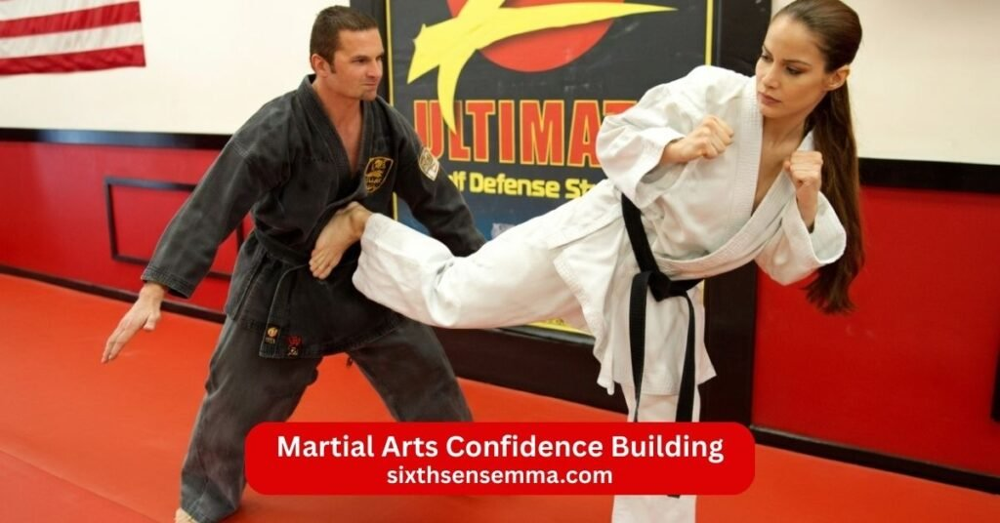
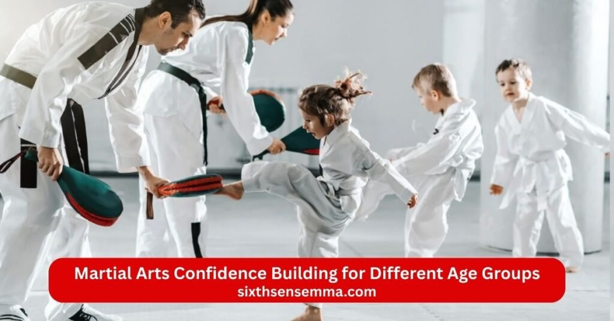

Martial Arts Confidence Building How Training Helps You Develop Strength and Self Belief

Martial arts confidence building happens through training that strengthens both body and mind at the same time. Martial art like karate tae kwon muay and others teach self defense techniques while helping practitioners develop self confidence self esteem and resilience. Martial arts build overall confidence by showing real progress through consistent practice new technique mastery and the ability to face challenges head on. In a martial arts academy or dojo students gain self assurance from improving physical fitness mental toughness and the sense of empowerment that comes from learning self defense. Martial arts help people gain confidence that extends beyond the dojo into every aspect of their lives.
How Martial Arts Confidence Building Works
Martial arts confidence building works by turning small daily efforts into real belief in yourself. Every class in the dojo pushes you to try hard face challenges and see results. Martial arts training creates a clear path where you start weak and grow stronger physically and mentally. The process builds self confidence step by step through effort progress and support from instructors and training partners. Martial arts help people gain confidence that lasts because it comes from real achievements not empty words.
Learning New Skills and Techniques
Learning new skills and techniques plays a big part in martial arts confidence building. When you first start martial arts everything feels hard but each new move you master creates a strong sense of accomplishment. You begin with basic strikes blocks and stances then move to combinations sparring and self defense techniques. Every time you get a technique right your self esteem grows. Martial arts teaches persistence so even when you struggle you keep practicing until it clicks. This learning process shows you that effort brings results which builds self assurance and the belief that you can handle new challenges. Practitioners develop a calm feeling of control as they add more skills to their toolbox.
Building Discipline Through Consistent Training
Building discipline through consistent training forms the core of martial arts confidence building. You show up to class regularly even when tired or busy. Martial arts build discipline by requiring you to follow rules respect the instructor and push through difficult drills. Over time this habit of showing up and giving effort creates mental resilience. You learn to stay focused stay committed and handle setbacks without quitting. This discipline carries over into life’s challenges where you face problems head on with resilience and self assurance. Martial arts creates mental toughness that helps you stay calm under pressure and tackle obstacles with steady determination.
Physical Training and Martial Arts Confidence Building
Physical training in martial arts classes confidence building changes how you see and feel about your body. Regular practice in karate tae kwon muay or other styles makes you stronger fitter and more in control. The physical work supports mental growth because a capable body gives you real reasons to feel confident. Martial arts offers physical skills that make everyday movement easier and build a foundation for lasting self confidence.
Improving Strength and Fitness
Improving strength and fitness supports martial arts confidence building in a direct way. Martial arts training develops power endurance and overall physical fitness through repeated strikes blocks kicks and body movement. You work many muscle groups at once which builds a strong balanced body. As your strength and fitness level rise you feel more capable and secure in your physical abilities. Martial arts help you gain confidence from seeing your body improve and perform betzzter over time. This physical change creates empowerment because you know you can handle physical demands with ease.
Developing Better Body Control and Balance
Developing better body control and balance enhances martial arts confidence building through improved movement awareness. Martial arts teaches precise footwork timing and posture during sparring drills and forms. You learn to stay stable shift weight quickly and move smoothly even under pressure. Better body control reduces fear of losing balance or falling which builds self assurance in motion. Martial arts provides physical techniques that make you feel coordinated and in command of your body. This control carries into daily life where good balance and awareness make you feel more secure and capable in every situation.
Mental Benefits of Martial Arts Confidence Building
Martial arts confidence building strengthens the mind as much as the body. Training teaches you to face fear doubt and pressure in a controlled safe space. Martial arts build mental resilience self assurance and calm under pressure which helps you handle life’s challenges with greater ease. The mental benefits come from repeated effort facing opponents and seeing steady progress which creates lasting mental toughness and emotional resilience.
Overcoming Fear and Self Doubt
Overcoming fear and self doubt happens naturally through martial arts confidence building. When you first start martial arts you often feel nervous about sparring trying new techniques or getting submitted on the mat. Each time you step forward push through discomfort and complete a difficult drill you prove to yourself that fear passes and effort brings results. Martial arts teaches you to confront self doubt head on by showing that setbacks are part of growth not failure. Over time practitioners develop the ability to stay calm face challenges and trust their skills. This mental fortitude reduces anxiety in daily situations and replaces doubt with quiet self confidence that grows stronger with every class.
Improving Focus and Mental Strength
Improving focus and mental strength is a key part of martial arts confidence building. Martial arts training requires full attention during fast paced drills sparring and technique practice. You must stay present read your opponent movements and make quick decisions which sharpens concentration. The need to remain calm under pressure builds mental toughness that carries into everyday life. Martial arts fosters resilience by teaching you to keep going even when tired frustrated or facing a stronger training partner. This mental strength helps you approach problems with clarity patience and determination. Practitioners often notice better focus at work school or home because martial arts creates a powerful mindset of staying composed and in control.

Martial Arts Confidence Building for Different Age Groups
Martial arts confidence building works for people of all ages because the training adapts to different needs and abilities. Kids adults and even older practitioners gain self confidence self esteem and empowerment through structured classes. The dojo environment supportive instructors and consistent progress create positive changes at every stage of life.
Confidence Building for Kids Through Martial Arts
Confidence building for kids through martial arts happens in a fun structured environment. Children learn respect discipline and basic self defense techniques while gaining physical skills that make them feel capable. Martial arts helps kids overcome shyness fear of failure or bullying by teaching them to stand tall speak clearly and handle challenges with resilience. Each belt promotion new technique or successful spar creates a sense of accomplishment. The supportive community and instructor guidance foster self assurance and mental fortitude. Kids who train regularly often become more outgoing assertive and secure because martial arts gives them the confidence to defend themselves and face life’s challenges with calm determination.
Confidence Building for Adults Through Training
Confidence building for adults through training focuses on personal growth and real world empowerment. Adults often start martial arts to reduce stress improve fitness or learn self defense but quickly discover deeper changes. Training builds mental resilience by pushing you through tough rolls difficult techniques and moments of doubt. Martial arts teaches adults to stay calm under pressure set goals and celebrate progress which boosts self esteem and self assurance. The physical exertion and skill mastery create a sense of security and control that carries into professional life relationships and daily challenges. Adults who practice martial arts regularly feel stronger physically and mentally ready to tackle obstacles head on and approach the future self with greater belief and determination.
Role of Professional Coaching in Martial Arts Confidence Building
Professional coaching plays a central part in martial arts confidence building because it gives clear direction safe practice and steady progress. An experienced instructor sees what you need corrects mistakes early and helps you move forward without frustration. Martial arts training under good guidance turns effort into real self confidence because every class builds skills that make you feel capable. Martial arts build self assurance through proper technique consistent effort and the knowledge that someone experienced watches over your development.
Guidance from Experienced Martial Arts Instructors
Guidance from experienced martial arts instructors forms the foundation of martial arts confidence building. A skilled instructor demonstrates techniques correctly explains why they work and adjusts them to fit your body type and current level. They correct posture grip timing and breathing during practice so you learn the right way from the beginning. When you struggle the instructor offers calm encouragement points out small wins and shows how to fix problems. This personal guidance removes guesswork prevents bad habits and creates trust in the process. Practitioners feel supported safe to try hard and confident that their effort leads to real improvement in self defense skills physical techniques and mental strength.
Structured Training Programs for Skill Development
Structured training programs for skill development support martial arts confidence building by creating a clear path from beginner to advanced levels. Classes start with fundamentals like basic stances strikes blocks and simple self defense techniques then add combinations sparring and more complex moves over time. Each step builds on the last so progress feels logical and achievable. Martial arts teaches persistence through regular practice goal setting and measurable milestones like belt promotions or mastering a new technique. This organized approach gives practitioners a sense of direction and accomplishment. When you see steady improvement in physical skills mental toughness and overall ability self confidence grows naturally because you know the training works.
Why Choose Sixth Sense MMA For Martial Arts Training for Confidence Building?
Sixth Sense MMA stands out as the best choice for martial arts training for confidence building because it combines expert instruction a positive atmosphere and programs that focus on real personal growth. The academy helps people of all levels develop self confidence self esteem resilience and empowerment through structured safe and motivating classes. Every part of the gym supports the journey of building stronger confidence inside and outside the dojo.
Experienced and Certified Instructors
Experienced and certified instructors at Sixth Sense MMA guide students with deep knowledge and clear teaching. They hold proper certifications in various martial arts and have years of training teaching and real world application. Instructors watch closely correct form explain techniques and give encouragement during every session. They help beginners feel safe while pushing advanced students to refine skills and overcome plateaus. This level of expertise builds trust in the training process and helps practitioners gain confidence through accurate guidance and steady progress.
Supportive and Motivating Training Environment
The supportive and motivating training environment at Sixth Sense MMA makes confidence building enjoyable and sustainable. Training partners show respect encourage each other and celebrate small wins together. The dojo creates a welcoming space where people feel comfortable asking questions trying hard and learning from mistakes. Instructors foster positivity keep classes controlled and make sure everyone progresses at their own pace. This sense of community reduces fear of failure and builds camaraderie. Practitioners feel motivated to return consistently because the atmosphere helps them push limits and grow in self assurance with every class.
Programs for Beginners and Advanced Students
Programs for beginners and advanced students at Sixth Sense MMA fit every level perfectly. Beginner classes teach fundamentals in a slow safe way so new people build confidence without feeling overwhelmed. Intermediate and advanced sessions add complex techniques sparring and strategy work for those ready for more challenge. The structured progression ensures skills develop logically and everyone sees real improvement. Martial arts offers physical techniques mental resilience and self defense skills that grow stronger over time. This tailored approach helps all students gain self confidence through clear milestones and consistent results.
Focus on Personal Growth and Self Confidence
The focus on personal growth and self confidence sets Sixth Sense MMA apart in martial arts training. Classes go beyond physical techniques to build mental toughness discipline and empowerment. Instructors emphasize goal setting overcoming setbacks and celebrating progress which helps students develop self assurance that extends beyond the dojo. The training creates opportunities for growth in every aspect of life from handling life’s challenges with resilience to feeling secure in daily situations. Martial arts provides a powerful way to build stronger self esteem and face the world with calm determination.
Contact US
If you want to start martial arts training build real confidence learn self defense skills improve physical fitness or simply visit the gym to meet the instructors and see the facilities we are ready to help you begin.
- 817 S MacArthur Blvd #100 Coppell TX 75019 United States
- (469) 972 7800
- info@sixthsensemma.com
Conclusion
Martial arts confidence building creates real lasting change by combining physical training mental discipline and steady progress in a supportive environment. Martial arts build self confidence self esteem and resilience through learning self defense techniques mastering new skills and facing challenges head on. Practitioners develop mental toughness calm under pressure and the ability to tackle life’s challenges with resilience and self assurance. The dojo or martial arts academy offers a structured space where instructors guide students celebrate achievements and foster personal growth. Martial arts help people gain confidence that extends beyond physical techniques into every aspect of their lives.
Follow Us on Social Media
Stay connected with Sixth Sense MMA through our social media channels. Follow us for class updates, training tips, and a closer look at our self defense community.
FAQ’s
Yes martial arts build confidence in a real and lasting way. Training teaches you to face challenges head on push through discomfort and see steady progress through new skills and belt ranks. Each time you master a technique spar successfully or overcome a tough opponent you prove to yourself what you can do. This creates self assurance that carries into daily life. Martial arts help people gain confidence by building physical capability mental toughness discipline and the ability to stay calm under pressure. The dojo environment supportive instructors and consistent effort turn doubt into quiet self belief over time.
The 3 C’s of self esteem are Competence Confidence and Connectedness. Competence means feeling capable in what you do. Confidence is the belief in your own abilities and worth. Connectedness is having positive relationships and feeling accepted by others. Together these three elements create strong healthy self esteem. Martial arts training supports all three by building real competence through skills confidence through achievement and connectedness through the supportive community in the dojo.
The 4 skills of karate are kihon kumite kata and bunkai. Kihon is basic techniques like punches kicks blocks and stances drilled repeatedly for perfect form. Kumite is sparring where you practice techniques against a partner in controlled or free fighting. Kata is a series of pre arranged movements performed alone to develop technique timing and focus. Bunkai is the application of kata movements in real self defense situations. These four areas together build complete karate skill physical ability and mental discipline.
Martial artists are so confident because training gives them real proof of their ability to handle difficult situations. They regularly face physical mental and emotional challenges spar with opponents push past fatigue and master complex techniques. Each success from landing a strike escaping a hold or earning a higher belt builds self assurance. Martial arts teaches discipline resilience and calm under pressure which reduces fear and self doubt. The supportive dojo environment celebrates progress and helps practitioners feel capable and secure. This earned confidence from consistent effort and visible improvement makes martial artists stand out as calm assured people.
Martial arts does not directly increase IQ which measures general intelligence. However martial arts training improves cognitive functions that support smarter thinking. It enhances focus concentration problem solving quick decision making spatial awareness and memory through drills sparring and strategy. Practitioners develop better mental clarity and mental toughness which helps in learning and handling complex situations. Regular training also reduces stress improves sleep and boosts overall brain health. While it does not raise raw IQ martial arts sharpens mental skills that make you perform better in daily tasks school or work.
Martial artists are so calm because training teaches them to stay composed under pressure. Sparring rolling or facing opponents forces you to control breathing emotions and reactions even when tired or stressed. Martial arts builds mental toughness resilience and focus through repeated exposure to discomfort and controlled challenges. Over time practitioners learn to stay present think clearly and respond strategically instead of reacting with panic. The discipline breathing techniques and mindset of staying calm during training carry over into real life. This ability to remain calm under pressure comes from consistent practice and the confidence that comes with knowing how to handle tough moments.
The 5 rules of karate often called the dojo kun are a set of guiding principles created by Gichin Funakoshi the founder of Shotokan karate. They are Seek perfection of character Be faithful Endeavor Respect others Refrain from violent behavior. These rules emphasize personal development humility discipline respect and non violence. Students recite them at the beginning or end of class to remind themselves of the deeper values behind martial arts training.
There is no official list of exactly 7 martial arts but some common groupings of major styles include karate tae kwon do judo Brazilian jiu jitsu Muay Thai boxing and wrestling. These represent a mix of striking grappling and self defense systems from different cultures. Other lists might include kung fu aikido or krav maga. The number 7 is not fixed but these seven cover a wide range of techniques physical demands and philosophies in martial arts.
No single style in karate is universally the most powerful because effectiveness depends on the practitioner training quality and situation. Shotokan karate is known for strong linear powerful strikes and deep stances. Kyokushin karate emphasizes full contact fighting toughness and body conditioning. Goju ryu focuses on close range power breathing and circular movements. Shito ryu combines hard and soft techniques. The most powerful style is the one practiced consistently with good instruction proper technique and real sparring. Power comes from the martial artist not just the style.
The 7 life skills vary depending on the source but a common set includes communication problem solving critical thinking emotional intelligence adaptability resilience and leadership. Other versions list time management decision making goal setting teamwork self awareness and conflict resolution. Martial arts training supports many of these through discipline focus resilience goal setting teamwork and learning to stay calm under pressure. Practitioners develop life skills that help in school work relationships and personal challenges.
No jiu jitsu is not mainly a talent it is a skill built through consistent training practice and smart learning. Some people start with better coordination body awareness or athletic background but almost anyone can become skilled with dedication. Top black belts often say success comes from thousands of hours on the mat drilling rolling and studying rather than natural gift. Jiu jitsu rewards persistence patience and a learning attitude more than inborn talent. The beauty of BJJ is that smaller or late starters can surpass naturally gifted athletes through hard work and technique.
Train with us in Coppell
The first class is free. Shorts, a t-shirt and a water bottle. We lend the rest.
Book a free class